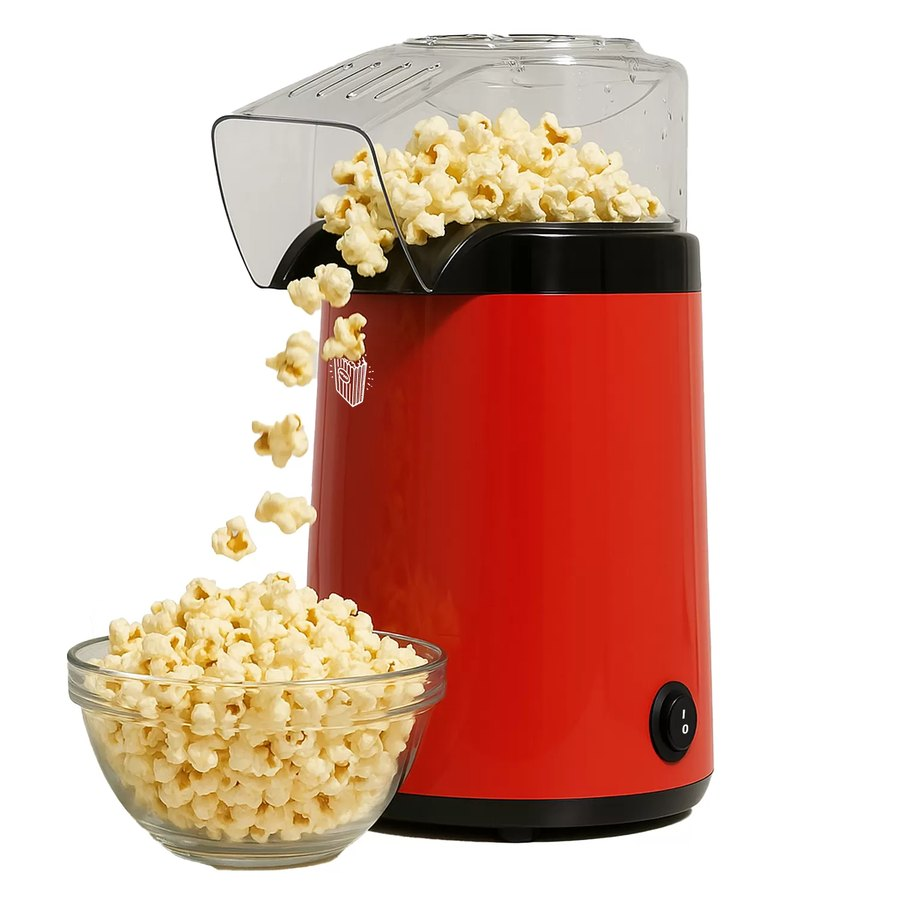

Registro · Semana 03
Primeiro perfil de torra e ajustes de potência

Na terceira semana, o foco mudou para a lógica de controle. A ideia não era criar um perfil sofisticado de uma vez, mas começar a compor as etapas fundamentais da torra: aquecimento inicial, estabilização, desenvolvimento e resfriamento gradual.
Primeiro ciclo executado
O primeiro ciclo mostrou que a pipoqueira consegue seguir uma curva de temperatura em um intervalo útil, mas com atraso térmico muito evidente. Isso significa que qualquer controle precisa reagir com antecedência, ajustando a potência antes que a temperatura ultrapasse o alvo. O processo ficou mais claro quando notamos que o sistema responde em tempo bastante lento em comparação com a velocidade de variação de potência.
Estratégia de ajuste
Foi definido um padrão inicial de potência em degraus: mais energia no início para aquecer a massa e menos energia na etapa seguinte, em um movimento que reduza a deriva de temperatura e aumente a estabilidade. O comportamento ainda é uma aproximação, mas evidencia a direção correta: controlar a entrada de potência em vez de tentar corrigir a temperatura apenas no momento em que ela passa do limite.
O que será validado
As próximas iterações devem medir a repetibilidade entre bateladas e entender o quão sensível o processo é a variações na carga e ao ambiente. O objetivo é que o perfil de torra se torne previsível o suficiente para que a máquina execute sempre a mesma sequência, independentemente do operador.